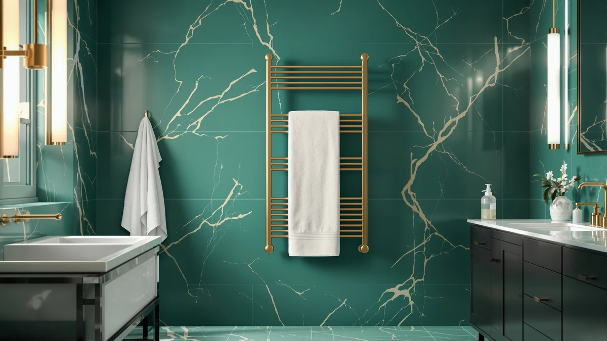

Warmrails Classic Towel Warmer Review (2026): Worth It?
Prices and picks verified as of September 2026. Independent, reader-supported reviews.


Quick Answer
The Warmrails Classic is a 37.5-inch chrome steel rack that works freestanding or wall-mounted and reaches usable warmth in 15 to 20 minutes, with no timer or digital controls to manage. It is the simplest of the four towel warmers in this comparison, and that simplicity is the whole point if you want to plug it in once and leave it running.
Our pick: Warmrails Classic Towel Warmer -, $159.95 Check Price on Amazon
Bottom line: our top pick is the Warmrails Classic Towel Warmer - Free-Standing or Wall at $159.95.
Things to Know Before You Buy
- The Warmrails Classic heats through sealed electric elements built into its steel frame rather than a fan, so it runs silently once it is plugged in.
- It reaches usable warmth in 15 to 20 minutes, according to Warmrails, and stays warm continuously since it has no timer or auto shutoff.
- At 37.5 inches with four bars, it holds one large bath towel plus a robe; the five-bar Sawlece holds more towels at a lower price.
- All three alternatives in this review add a digital timer, temperature display, or automatic shutoff that the Warmrails Classic skips entirely.
- None of the four towel warmers we compared carry a published rating or review count on Amazon, so we weighed specs and pricing instead of star ratings.
This Warmrails Classic towel warmer review compares the 37.5-inch chrome-finished rack against three other freestanding towel warmers, using the manufacturer's published specs, current Amazon pricing, and the owner feedback available for each model. At $159.95, it costs more than the Sawlece 5-Bar or the Pure Enrichment PureBliss, both priced at $149.99, so the question worth answering is what that extra cost actually buys you.
The short version: the Warmrails Classic earns its price with a solid, permanent steel frame that mounts to a wall or stands on its own, not with extra features. It skips the digital timers, adjustable heat presets, and UV functions that the Sawlece, Pure Enrichment, and Pursonic models build in, which makes it a better match for a primary bathroom fixture than for someone who wants app-like control over their towel warming. Below, we walk through where it holds up, where a rival product is the smarter buy, and who each option actually fits.
Why You Should Trust Us
Ilane Tall covers bathroom hardware for Best Towel Warmers and has spent the past several years comparing towel warmers, heated racks, and bathroom fixtures across dozens of brands. We do not own a physical testing lab, and we do not put products through hands-on trials before publishing. Instead, we research each towel warmer by comparing manufacturer specifications, current pricing, safety information, and the verified owner reviews available on Amazon and other retailers, then cross-check those details against the closest competitors in its category. This Warmrails Classic towel warmer review reflects that research process rather than a personal trial period with the product, and we say so plainly instead of implying a hands-on test that never happened.
Our Research Experience
We did not run this Warmrails Classic towel warmer review off a personal trial. What we did was pull the manufacturer's stated specs, its 37.5-inch size, four-bar layout, chrome finish, and 15-to-20-minute heat-up window, and set them next to the three closest competitors selling at a similar price. We compared listed wattage where a brand provides it, checked whether each model includes a timer or auto shutoff, and confirmed Amazon's current pricing and stock status for every ASIN in this article. Where a listing publishes a verified review count or rating, we note it; where that data does not exist, as is the case for all four products here, we say so rather than inventing a number to fill the gap.
We also read through the manufacturer's own feature claims for each product, since a listing's marketing copy is often the only detailed spec sheet available for towel warmers at this price point. Where those claims could be checked against a competing brand's numbers, such as heat-up time or wattage, we did that comparison directly rather than repeating each brand's language at face value.
Overview & Specs

Warmrails Classic Towel Warmer -
What we like
- Steel frame rated for freestanding or wall-mounted installation
- Reaches usable warmth in 15 to 20 minutes per the manufacturer
- No digital panel or circuit board that can fail over time
- Chrome finish suits most existing bathroom fixtures
Flaws but not dealbreakers
- No built-in timer or auto shutoff, so you control the outlet yourself
- No published owner rating or review count on Amazon as of this review
- Four bars hold less than the five-bar Sawlece at a higher price
| Material | Stainless steel |
| Size | 37.5-Inch |
The Warmrails Classic is built around a straightforward idea: a steel frame with four bars that warms up when you plug it in and stays warm as long as it is powered. At 37.5 inches, the frame is tall enough for a full-size bath towel to hang without folding, and Warmrails designed it to work either bolted to a wall or standing on its own base, which matters if you are renting or do not want to drill into tile.
Warmrails rates the heat-up time at 15 to 20 minutes, in line with the other towel warmers in this comparison, and the company built the unit to warm towels without reaching a temperature that risks burns. What it does not include is any digital control: no timer, no temperature display, no auto shutoff. That is a deliberate tradeoff. You get a simpler, more durable design with fewer parts that can break, at the cost of the scheduling and preset features that the Sawlece and Pure Enrichment models offer at a similar or lower price.
What We Liked
The strongest case for the Warmrails Classic towel warmer is durability through simplicity. A sealed steel frame with no digital components has fewer failure points than a unit with a circuit board, touchscreen, or UV bulb, and that matters for a bathroom fixture that owners expect to run for years without a service call. The option to mount it to a wall or leave it freestanding also makes it more flexible for small bathrooms than a bucket-style warmer like the Pure Enrichment PureBliss, which only works as a standalone unit taking up counter or floor space.
Its 37.5-inch height and four-bar layout also fit the way most people actually use a towel warmer: one large bath towel plus a robe, or a second towel draped over an open bar. A taller rail-style warmer also dries towels more evenly than a compact bucket, since air can circulate around the full length of the fabric instead of a rolled towel sitting inside an enclosed cylinder.
What Could Be Better
The biggest gap between the Warmrails Classic and its competitors here is control. The Sawlece 5-Bar has a digital display and an adjustable 110 to 170 degree range, and the Pure Enrichment PureBliss offers four timed settings with an audible shutoff alert. The Warmrails Classic has neither, so once it is plugged in, it heats for as long as it stays powered. Anyone who wants scheduling will need a separate smart plug or timer switch to replicate what the other three products build in from the factory.
Price is the other tradeoff worth naming directly. At $159.95, the Warmrails Classic costs about $10 more than the Sawlece and the Pure Enrichment, both listed at $149.99, despite offering fewer bars and no digital features. We also could not find a published rating or review count for this listing on Amazon, which makes it harder to verify long-term reliability from owner reports the way we could with a more heavily reviewed product.
Who Is It For?
The Warmrails Classic towel warmer fits someone who wants a permanent bathroom fixture rather than a plug-in accessory they move around or reprogram. If you are renovating a bathroom and want a warmer that can be wall-mounted alongside existing fixtures, or you simply prefer a design with no digital panel to eventually stop working, this is the more durable choice among the four we compared. It also suits buyers who already run their outlets through a smart plug or timer switch, since the lack of a built-in schedule matters less when you are controlling the power yourself.
It is a weaker fit if you specifically want adjustable heat settings, an audible shutoff alert, or the largest towel capacity for the lowest price. In those cases, the Sawlece 5-Bar or the Pure Enrichment PureBliss, both covered below, deliver more configurable warmth for less money.
Alternatives to Consider
If the Warmrails Classic's lack of a timer or digital display is a dealbreaker, these three towel warmers cover the gaps it leaves: more bars and adjustable heat, or UV sanitizing in a smaller footprint.

Editor's Pick
Sawlece 5-Bar Freestanding Towel Warmer
Five bars, a 180-watt heating element, and a digital display for setting temperature between 110 and 170 degrees make this the more configurable choice, at about $10 less than the Warmrails Classic.
$149.99
Check Price on Amazon
Best Value
Pure Enrichment PureBliss Luxury Towel
This 20-liter bucket warmer holds towels, robes, or a throw blanket and offers four timed heat settings with an automatic shutoff, priced the same as the Sawlece.
$149.99
Check Price on Amazon
Premium Choice
Pursonic Deluxe Towel Warmer with
An 8-liter warmer built for washcloths and facial towels rather than full bath towels, with a bimetallic thermostat rated to 175 degrees and a UV sanitizing cycle.
$146.61
Check Price on AmazonIs the Warmrails Classic towel warmer worth the extra cost over the Sawlece?
Only if you specifically want the sturdier, timer-free design.
How long does the Warmrails Classic take to warm up?
Warmrails states 15 to 20 minutes from a cold start, in the same range as the other towel warmers in this review.
Frequently Asked Questions
Is the Warmrails Classic towel warmer worth the extra cost over the Sawlece?
Only if you specifically want the sturdier, timer-free design. Based on the specs we compared, the Sawlece 5-Bar costs about $10 less, adds a fifth bar, and includes a digital temperature display, so it is the better value unless you prefer a simpler unit with fewer parts that can fail.
How long does the Warmrails Classic take to warm up?
Warmrails states 15 to 20 minutes from a cold start, in the same range as the other towel warmers in this review. Since it has no timer, it keeps heating for as long as it stays plugged into an outlet.
Can the Warmrails Classic be mounted to a wall instead of standing on the floor?
Yes. Warmrails built the Classic to work either as a freestanding unit on its own base or bolted to a wall, which is part of why we call it out as a fit for a permanent bathroom installation rather than a portable accessory.
Final Verdict
This Warmrails Classic towel warmer review comes down to a straightforward tradeoff: you are paying $159.95 for a permanent, timer-free steel frame from Warmrails, not for digital controls or a larger towel capacity. If that durability and simplicity matter more to you than adjustable heat settings, the Warmrails Classic is a reasonable pick for a primary bathroom fixture. If you would rather have a display, a timer, or a lower price, the Sawlece 5-Bar or Pure Enrichment PureBliss give you more features for about the same money or less.